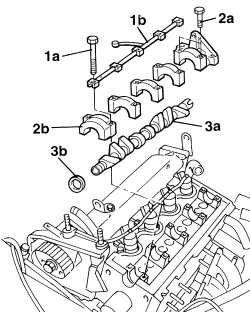
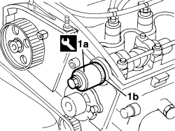

1036B10 OVERHEAD CAMSHAFT IN CYLINDER HEAD - R.R ON VEHICLE
- Path
- Procedures > 10 ENGINE > 1036 TIMING SYSTEM > 1036B OVERHEAD CAMSHAFT (1) IN CYLINDER HEAD (1) > 1036B10 OVERHEAD CAMSHAFT IN CYLINDER HEAD - R.R ON VEHICLE
- Kind
- repair procedure (removal / refitting; the operation number is the code)
- Applies to
- engines: 1.9 JTD 8V; all production periods
- Interactive page
- https://sloeber94.github.io/elrnDB/#/939006037
Applies to: engines: 1.9 JTD 8V; all production periods
 Removing
Removing
 Refitting
RefittingOp. 4450B04 RIGHT FRONT WHEEL - R.R
Op. 7055B66 ENGINE COMPARTMENT DUST COVER IN RIGHT FRONT WHEEL ARCH - R.R.
Op. 1092G10 SINGLE ENGINE BELT - R.R
Op. 1092A10 CRANKSHAFT PULLEY - R + R
Op. 1048A10 AIR FILTER ASSEMBLY - R.R.
Op. 7055B54 UNDER ENGINE PROTECTION/GUARD - R.R.
Op. 1008B10 POWER UNIT FRONT SUPPORT FLEXIBLE MOUNTING (TIMING SIDE) - REPLACE
Op. 1032D12 TIMING SYSTEM PROTECTIVE COVER(S) - R + R
Op. 1092G20 ENGINE COMPONENT SINGLE BELT FIXED TENSIONER - ONE - R + R
Op. 1008A46 POWER UNIT RIGID SUPPORT - TIMING SIDE - R.R.
Op. 1032B10 TOOTHED TIMING BELT - R + R FOR TIMING ADJUSTMENT OR REPLACEMENT
Op. 1032B40 TOOTHED DRIVEN PULLEY (ONE) - R + R WITH TIMING BELT REMOVED
Op. 1016A20 SINGLE TAPPET COVER -R.R AND REPLACE GASKET
1. Undo the bolts (1a) and remove the camshaft bearings lubrication pipe (1b).
2. Undo the bolts (2a) and remove the camshaft caps (2b).
3. Remove the camshaft (3a) complete with oil seal (3b).

Applies to: engines: 1.9 JTD 8V; all production periods
Refitting
Removing- Fit the camshaft in the housing in the cylinder head.
- Place the camshaft caps in their housings.
- Place the camshaft bearings lubrication pipe in its housing.
- Tighten the bolts fixing the camshaft caps to the recommended torque.
Component | Fastening | dia | Value (daNm) | Validity |
|---|---|---|---|---|
Camshaft caps | Bolt | M7 | 1.3 ÷ 1.6 | 1.9 Multijet |
1. Fit a new oil seal (1b) on the camshaft using the tool (1a).
Tool | Description | Function | Validity |
|---|---|---|---|
1860824000 | Fitting tool | Fitting camshaft front oil seal | 1.9 Multijet |

Applies to: engines: 1.9 JTD 8V; all production periods
Op. 1016A20 SINGLE TAPPET COVER -R.R AND REPLACE GASKET
Op. 1032B40 TOOTHED DRIVEN PULLEY (ONE) - R + R WITH TIMING BELT REMOVED
Op. 1032B10 TOOTHED TIMING BELT - R + R FOR TIMING ADJUSTMENT OR REPLACEMENT
Op. 1008A46 POWER UNIT RIGID SUPPORT - TIMING SIDE - R.R.
Op. 1092G20 ENGINE COMPONENT SINGLE BELT FIXED TENSIONER - ONE - R + R
Op. 1032D12 TIMING SYSTEM PROTECTIVE COVER(S) - R + R
Op. 1008B10 POWER UNIT FRONT SUPPORT FLEXIBLE MOUNTING (TIMING SIDE) - REPLACE
Op. 7055B54 UNDER ENGINE PROTECTION/GUARD - R.R.
Op. 1048A10 AIR FILTER ASSEMBLY - R.R.
Op. 1092A10 CRANKSHAFT PULLEY - R + R
Op. 1092G10 SINGLE ENGINE BELT - R.R
Op. 7055B66 ENGINE COMPARTMENT DUST COVER IN RIGHT FRONT WHEEL ARCH - R.R.
Topics linked from this page (14)
- 1008A46 POWER UNIT RIGID SUPPORT - TIMING SIDE - R.R.
- 1008B10 POWER UNIT FRONT SUPPORT FLEXIBLE MOUNTING (TIMING SIDE) - REPLACE
- 1016A20 SINGLE TAPPET COVER -R.R AND REPLACE GASKET
- 1032B10 TOOTHED TIMING BELT - R + R FOR TIMING ADJUSTMENT OR REPLACEMENT
- 1032B40 TOOTHED DRIVEN PULLEY (ONE) - R + R WITH TIMING BELT REMOVED
- 1032D12 TIMING SYSTEM PROTECTIVE COVER(S) - R + R
- 1048A10 AIR FILTER ASSEMBLY - R.R.
- 1092A10 CRANKSHAFT PULLEY - R + R
- 1092G10 SINGLE ENGINE BELT - R.R
- 1092G20 ENGINE COMPONENT SINGLE BELT FIXED TENSIONER - ONE - R + R
- 3330D30 VACUUM PUMP - R+R
- 4450B04 RIGHT FRONT WHEEL - R.R
- 7055B54 UNDER ENGINE PROTECTION/GUARD - R.R.
- 7055B66 ENGINE COMPARTMENT DUST COVER IN RIGHT FRONT WHEEL ARCH - R.R.